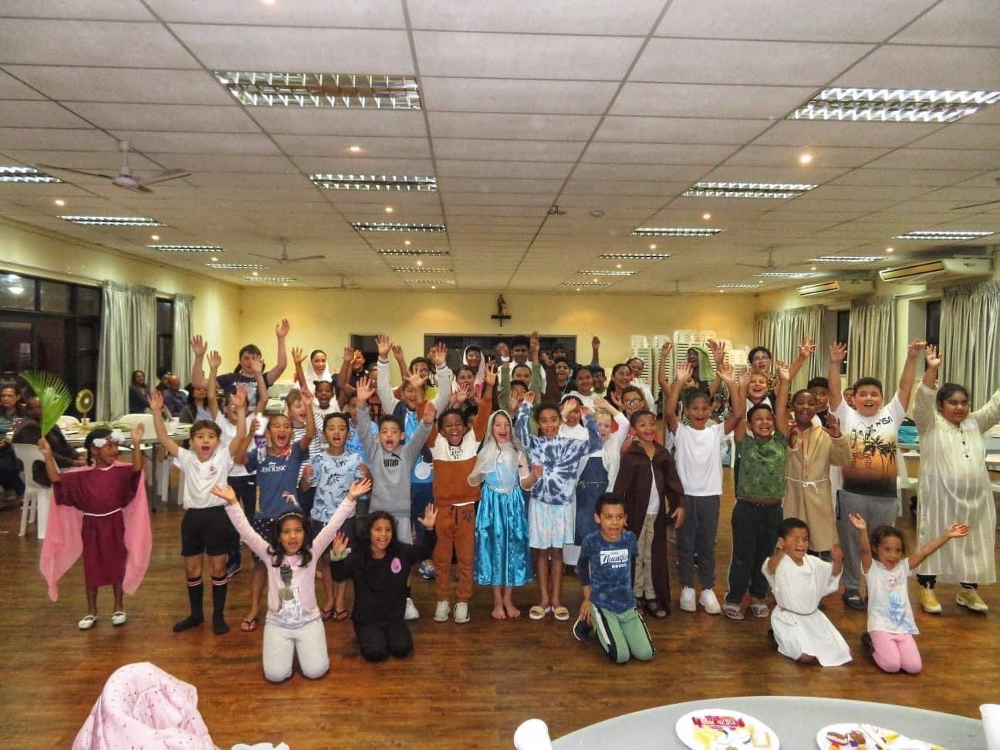
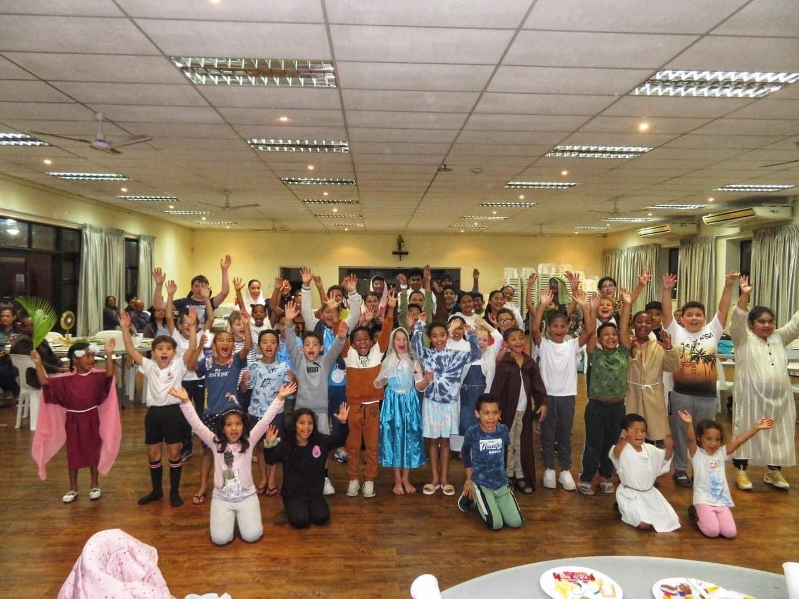

Adoration Chapel

Addiction Support
Knitting Group
Our Prayer Hotline
Send a prayer request to our WhatsApp
Mass Intentions
Send your Mass Intentions & Donation
Sick at Home or Hospital
We love to visit you
Things feel better when done together. Find out more about how we can help you feel like you belong to a community that cares for you.
We need to feed our hearts and minds. Find out more about how we can help you do this.
We can believe in God and belong to a community, but the final stage of development is when we take action in a way that fits our unique personality. Find out more about how we can help you do this.
Blessed are those who can give without remembering and take without forgetting.
To be an inviting, Spirit-filled community of MISSIONARY DISCIPLES at the service of all our sisters and brothers.
Our Parish is a place where MISSIONARY DISCIPLES are equipped to grow and build the Kingdom of God. To strengthen our relationship with Jesus Christ, we Break Bread and listen to the Scriptures; attend Bible Study, Alpha and Open Forum sessions together. We invite the stranger in, feed the hungry, clothe the poor, visit the sick and journey with the broken-hearted. We nurture our community by connecting with our brothers and sisters in Vine Groups and at social events.
The Parish of St. Joseph is a Member of the Divine Renovation Network and an active Alpha parish
Send a prayer request to our WhatsApp
Send your Mass Intentions & Donation
We love to visit you
You are welcome to join us...
 
